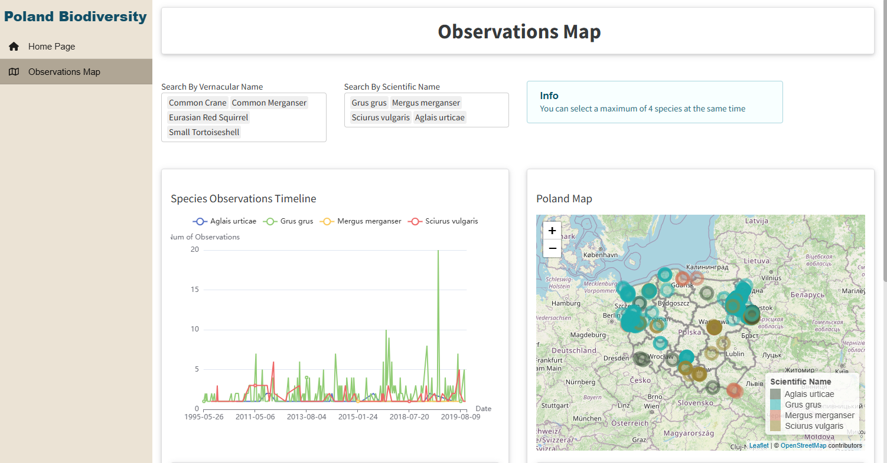
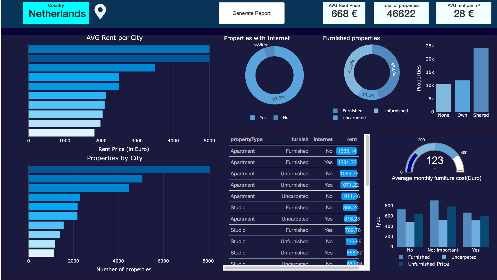
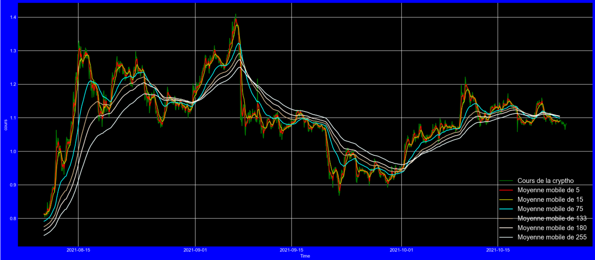

01 / SAVOIR-FAIRE
Analyser, expliquer, développer.
- Préparation de données, ETL et analyse statistique
- Machine learning et traitement du langage
- Visualisation et tableaux de bord interactifs
- API et déploiement d’applications Data & IA
DATA SCIENCE · ANALYTICS · IA
Data Scientist & Data Analyst
Je relie l’analyse, la modélisation et le développement pour transformer les données en solutions utiles.
À PROPOS
Formé à l’économie quantitative et à la data science à l’Université de Strasbourg, j’aborde chaque projet avec une double perspective : la rigueur de l’analyse et l’utilité pour ceux qui prennent les décisions.
Mon parcours réunit modélisation, tableaux de bord, développement d’API et applications d’IA. J’aime rendre les analyses compréhensibles et les modèles utilisables.
EXPERTISE
De la préparation des données à leur mise en valeur dans une application.
01 / SAVOIR-FAIRE
02 / SAVOIR-ÊTRE
03 / OUTILS
Également : Looker Studio, NoSQL, DB2 et COBOL.
SÉLECTION DE PROJETS
01 / IA & TRAITEMENT DU LANGAGE
Rendre un modèle de NLP accessible depuis une application : nettoyer le texte, préparer les séquences et renvoyer une prédiction structurée.

Capture du projet02 / DONNÉES GÉOGRAPHIQUES
Transformer des données d’observation en une application qui permet de rechercher les espèces, de les situer et de suivre leur présence dans le temps.

Capture du projet03 / ANALYSE & VISUALISATION
Comparer les loyers, la répartition des logements et leurs caractéristiques dans un tableau de bord conçu pour explorer les données à plusieurs échelles.

Capture du projet04 / RECHERCHE QUANTITATIVE
Étudier les stratégies Trend, Trix et Alligator sur des données historiques, calculer leurs indicateurs et observer l’évolution de portefeuilles simulés.
D’autres applications, notebooks et expérimentations sont disponibles sur mon profil GitHub.
PARCOURS
2026 — Aujourd’hui
Stemfia
Co-conception d’une plateforme SaaS LegalTech, développement d’API Python, classification documentaire et fonctionnalités d’IA.
2024
Formation professionnelle · DataScientist, Paris
Projets COBOL z/OS, transactions CICS, bases DB2/SQL et accès aux données.
2022 — 2023
BallSquad · Varsovie
Modèles Python et TensorFlow, déploiement Docker/AWS, traitements ETL, base SQL et tableaux de bord Power BI.
2021
FSEG · Strasbourg
Statistiques descriptives, régression OLS, tests statistiques et programmation appliquée.
FORMATION
Data Science pour l’économie
Économie quantitative
CERTIFICATIONS
DataScientist · Janvier 2025
Udemy · Septembre 2023
Kaggle · Septembre 2023
PRENONS CONTACT
Un besoin d’analyse, une application à construire ou une opportunité professionnelle : je serai ravi d’en discuter.
M’écrire